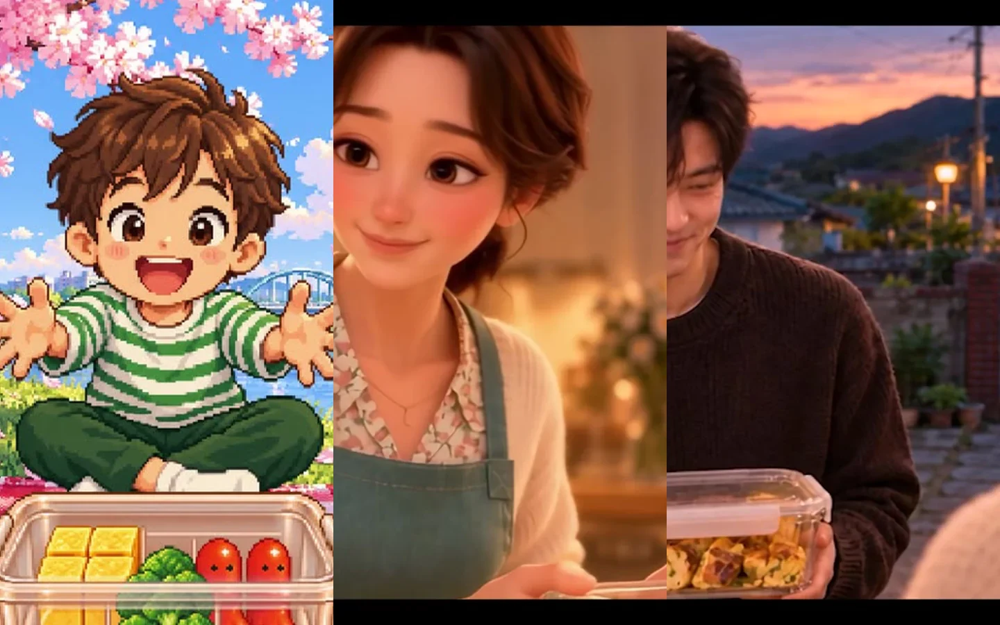
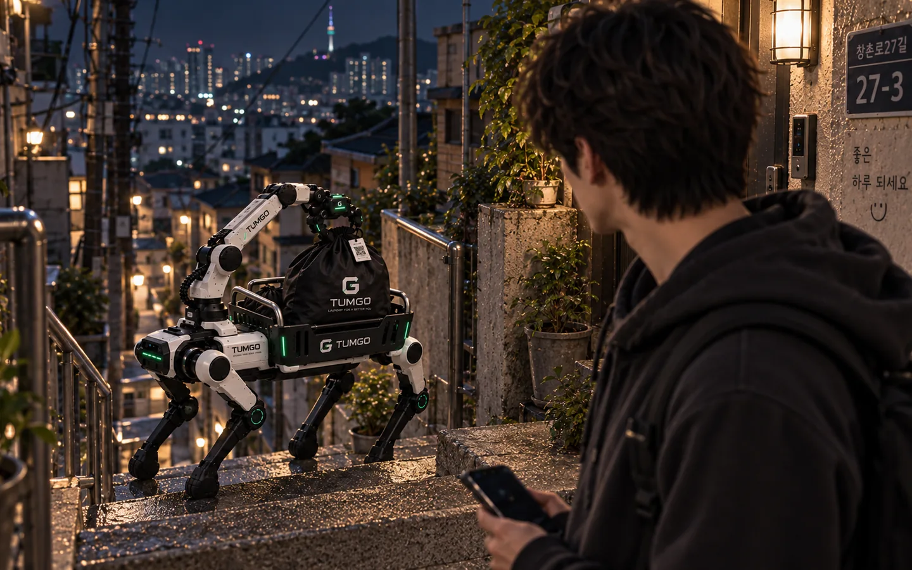
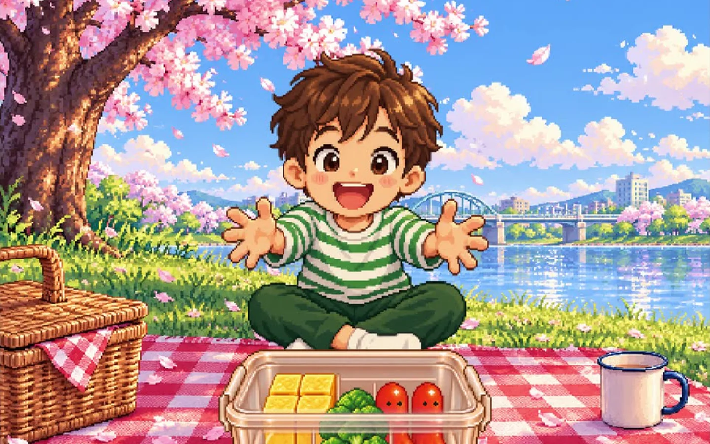
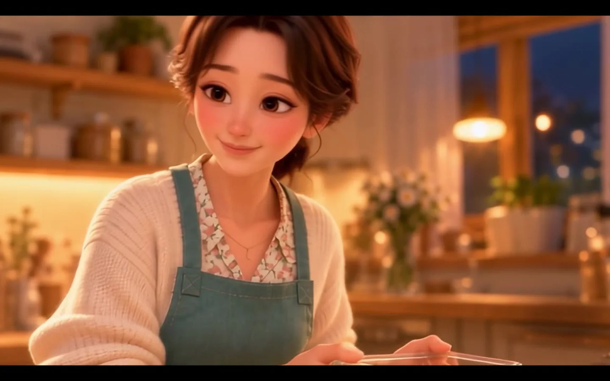
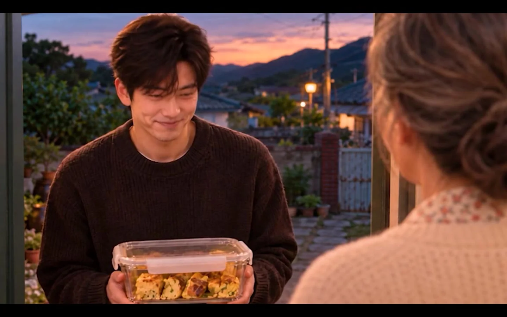
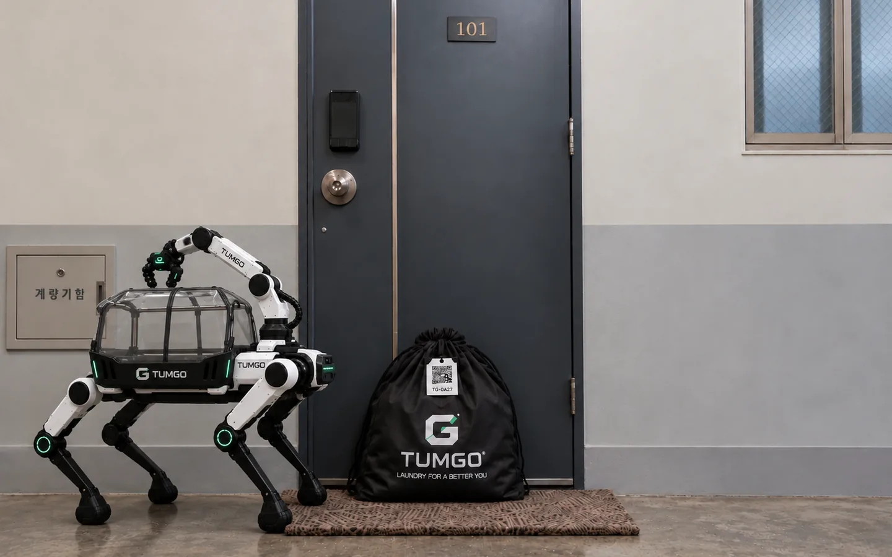
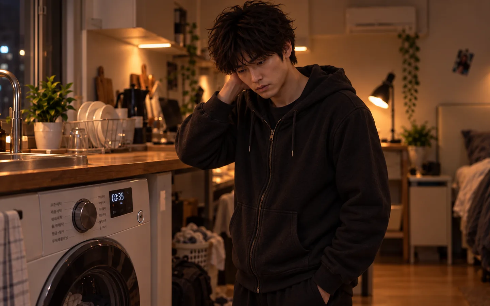

A PERSONAL AI FILM ARCHIVE — 2026
장면에는
온도가 있다.
Beyond the prompt.
Into the feeling.
생성형 AI와 사람의 연출이 만나는 지점.
서로 다른 두 이야기로 완성한 영상 작업의 기록입니다.


IN MOTION 01 / HUMAN STORIES / 02
INDEPENDENT CREATIVE WORKDESIGN · MOTION · SOUND · HUMAN-IN-THE-LOOP
01 — SELECTED WORKS
보고, 머무는
보고, 머무는
이야기.
조금 더 가까이 다가가면,
이야기는 움직이기 시작합니다.
FILM 01 / EMOTIONAL BRAND FILM
반찬통의 왕복.
1999 → 2007 → 2026
엄마가 채워 주던 통을,
이번엔 아들이 채워서 돌려준다.



① MEMORY / THE RETURNMOVE TO EXPLORE ↗
THREE ERAS · ONE GESTURE
05s / MOTION STUDY · STILLS
DIRECTOR'S NOTE
도트에서 3D로, 다시 실사로. 기술의 변화가 아니라 받는 사람에서 건네는 사람으로 변하는 마음을 담았습니다.
INTERMISSION / A MOMENT TO FEEL
Some stories are felt
before they are understood.
FILM 02 / FUTURE SERVICE COMMERCIAL
틈GO®
A SMALL GAP IN THE DAY
문 앞에 두세요.
나머지는 틈GO가.


② TUMGO / SERVICE FICTIONMOVE TO EXPLORE ↗
THE FUTURE AT YOUR DOOR
05s / MOTION STUDY · STILLS
DIRECTOR'S NOTE
늦은 퇴근길에 우연히 마주친 로봇 한 대. 생활 속 작은 번거로움을 없애는 미래를 실사형 AI 영상으로 구체화했습니다.
[ 02 — HOW IT'S MADE ]
AI가 만들고,
사람이 연출합니다.
01CONCEPT
아이디어와 페르소나, 스토리보드
02GENERATE
캐릭터·공간·장면 생성과 동작 테스트
03REFINE
일관성 검수, VFX, 색보정 및 사운드
04SCREEN
최종 영상과 컷별 제작 기록 연결
[ 03 — THE PERSON BEHIND THE SCENES ]
기술보다 오래 남는 건
한 장면의 감정.
정재환 · AI 영상 기획과 시각 연출
기획부터 생성, 편집과 검수까지. AI를 단순한 생성 도구가 아닌 새로운 제작 방식으로 활용합니다.